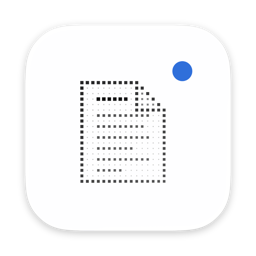

DWI / SOFTWARE
Explore our software.
Find the right tool by category or sub-brand. Open Downloads on any app to choose an installer for your device.
12 apps
01 / CATEGORYEngineering
Tools for technical design and precise work.
 FDWI
FDWIFreo
Tools for precise 3D design and CAD workflows.
Downloads
02 / CATEGORYCreative tools
Tools for creative work and listening.
 MDWI
MDWIMelora
A local music library and player for offline listening.
Downloads
03 / CATEGORYProductivity
Focused tools for notes, time, and everyday work.
 QReplace Big Tech Apps
QReplace Big Tech AppsQuill
Simple, focused notes for everything worth keeping.
Downloads
 TReplace Big Tech Apps
TReplace Big Tech AppsTimes
A macOS clock with alarms, timers, and a stopwatch.
Downloads
KReplace Big Tech Apps
Keepy
A reminder app for keeping track of things to do.
Downloads
Local build. Apple has not notarized this installer.
04 / CATEGORYBrowsers
Tools for exploring the web.
LReplace Big Tech Apps
LBrowser
A minimal web browser designed to be easy to use.
Downloads
05 / CATEGORYUtilities
Small tools for everyday needs.
 CReplace Big Tech Apps
CReplace Big Tech AppsCloudy
A weather app.
Downloads
Local build. Apple has not notarized this installer.
 CaReplace Big Tech Apps
CaReplace Big Tech AppsCalcium
A calculator app for everyday calculations.
Downloads
06 / CATEGORYDeveloper tools
Tools for working with code.
 GReplace Big Tech Apps
GReplace Big Tech AppsGhosty
A terminal app.
Downloads
Local build. Apple has not notarized this installer.
07 / CATEGORYOffice
Open source tools for documents, spreadsheets, and presentations.

PWired OfficeWired Paper
A free, open source word processor.
Downloads
 GWired Office
GWired OfficeWired Grid
A free, open source spreadsheet app.
Downloads
 SWired Office
SWired OfficeWired Slides
A free, open source presentation app.
Downloads
No apps match these filters.